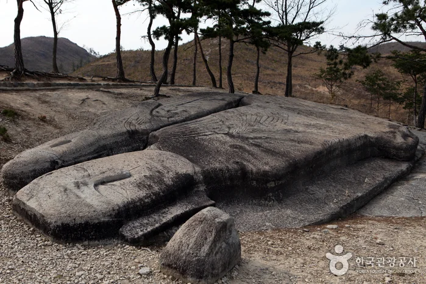
▲ 운주사 와불로 안내되는 바위. 촬영 시기는 자료에 없다. ⓒ 한국관광공사 · 공공누리 제3유형(변경금지)
"천불천탑이라는데, 지금 가면 정말 천 개가 있을까? 가을이 깊어지면 몇 시까지 둘러볼 수 있지?" 이 글은 2026년 10월 20일 기준으로 화순군 문화관광 자료, 한국관광공사 정보, 국가유산청 자료를 맞춰 보며 운주사의 석불·석탑 수, 와불, 운영시간, 늦가을 방문 요령을 정리했다. 결론부터 말하면 지금 남은 것은 천 개가 아니고, 그 수도 자료마다 다르다. 화순군 운주사 안내 바로가기
또 하나 챙길 점은 시간이다. 한국관광공사 정보상 사찰은 계절에 따라 폐장 시각이 다르고, 인근 화순군립 운주사문화관은 11월부터 마감이 17시로 당겨진다. 반대로 사찰 입장료는 공식 페이지에서 확인하지 못했다.
💡 먼저 결론
남은 석불·석탑은 자료마다 수치가 달라(석탑 12~22기, 석불 70~101구) 한 숫자로 단정할 수 없다. 사찰은 한국관광공사 정보 기준 하계 07:00~19:00, 동계 07:00~18:00에 연중무휴이고, 주차는 가능하다. 문화관은 무료이며 11월 1일부터 10:00~17:00로 바뀐다. 사찰 입장료는 확인하지 못했다.
1. 먼저 바로잡기 — 천불천탑, 지금 남은 건 몇 기인가
천불천탑은 부처 1천 구와 탑 1천 기를 뜻하는 이름이다. 화순군 문화재 안내에는 1942년 조사 때 석탑 30기, 석불 213구가 있었다는 기록이 소개되지만, 이후 여러 사유로 줄어든 것으로 서술돼 있다. 현재 수치는 출처마다 달라 아래처럼 나란히 놓았다. 화순군 운주사 문화재 안내 바로가기
| 출처 | 석탑 | 석불 | 비고 |
|---|---|---|---|
| 화순군 문화재 안내(참고설명) | 14기(3층 3·5층 4·7층 6·기타 1) | 70구(와불 2·좌불 3·마애불 2·입불 43·기타 20) | 같은 페이지에 1942년 조사 석탑 30·석불 213 기록 병기 |
| 한국관광공사 여행기사(2016-09 갱신) | 19기 | 93구 | 갱신 시점이 오래됨 |
| 국가유산청 월간 기사 | 20여 기 | 100여 구 | “지금도 20여 기의 석탑과 100여 분의 돌부처님”으로 서술 |
| 한국민족문화대백과사전(운주사 항목) | 21기 | 80구 | 1942년까지 석불 213·석탑 30으로 전함 |
| 한국민족문화대백과사전(운주사지 일원) | 12기 | 70여 구 | 반경 200m 안에 남은 수로 서술 |
| 국가유산포털 세계유산 설명 | 22기 | 101구 | 온전히 보존된 수. 형태를 갖추지 못한 것까지 석탑 관련 유물 약 141개, 석불 관련 115체 |
| 전설·옛 기록 | 1천 기 | 1천 구 | 천불천탑의 유래, 실제 수와는 별개 |
수치가 엇갈리는 것은 조사 시점과 낱개·무리 단위 같은 집계 기준이 다르기 때문으로 보이지만, 그 이유를 밝힌 공식 설명은 확인하지 못했다. 그래서 이 글은 하나의 숫자를 확정하지 않고 출처와 함께 병기한다.
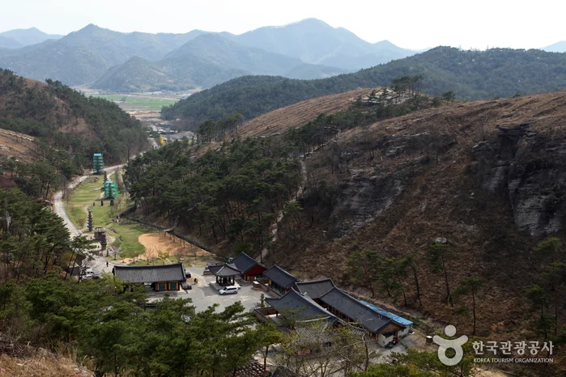
▲ 골짜기를 따라 자리한 운주사 일대 전경. 촬영 시기는 자료에 없다. ⓒ 한국관광공사 · 공공누리 제3유형(변경금지)
2. 지정·유래 — 무엇이 국가유산이고 왜 납작한가
국가유산청 자료에 따르면 운주사지는 국가지정문화재 사적이고, 석조불감·원형다층석탑 등이 보물로 지정돼 있으며 와형 불상, 마애불, 석탑 등 15점은 전라남도 유형문화재·문화재자료다. 운주사지(화순 운주사지 일원)는 사적 제312호이고, 한국민족문화대백과사전과 국가유산포털 검색 결과 기준으로 보물은 운주사 구층석탑(제796호)·석조불감(제797호)·원형다층석탑(제798호) 3건이다. 국가유산청 월간 기사는 보물 석탑을 '7층석탑'으로 적었지만 백과사전은 칠층석탑을 전라남도 유형문화재 제276호로 구분해 두어 자료마다 표기가 다르다. 화순군 문화재 안내 페이지에는 오래된 번호가 남아 있으니 최신 지정 현황은 국가유산포털 바로가기에서 '운주사'를 검색해 확인하자.
유래는 하나로 정리되지 않는다. 한국관광공사 정보에는 도선국사 창건설, 운주스님 창건설, 마고할미 설 등이 함께 소개되고, 출토 유물로 보아 늦어도 고려 초기인 11세기 초에는 세워졌을 것으로 추정한다고 적혀 있다. 임진왜란 때 훼손돼 폐사로 남았다가 18세기에 불상·불탑을 수리하고 약사전을 다시 세웠다고 한다.
| 항목 | 확인한 내용 | 근거 |
|---|---|---|
| 문화재 지정 | 사적 제312호, 보물 제796호(구층석탑)·제797호(석조불감)·제798호(원형다층석탑), 시도 지정 15점(국가유산청 월간 기사 서술) | 한국민족문화대백과사전, 국가유산청 월간 기사 |
| 창건 시기 | 늦어도 11세기 초 고려 초기 추정, 창건자는 설이 여럿 | 한국관광공사 |
| 세계유산 | 2017년 유네스코 세계유산 잠정목록 등재(한국관광공사 표기 “화순 운주사 석탑군”) | 한국관광공사 |
| 세계지질공원 | 무등산권 세계지질공원 명소로 지정 | 한국관광공사 |
석불이 납작하고 윤곽이 뚜렷하지 않은 데도 이유가 있다. 한국관광공사는 이곳 석불·석탑이 주변에서 쉽게 떼어낼 수 있는 응회암층으로 만들어져 화강암 조각과 달리 납작하다고 설명한다. 응회암은 중생대 백악기 화산재와 돌덩이가 쌓여 생긴 암석이다.
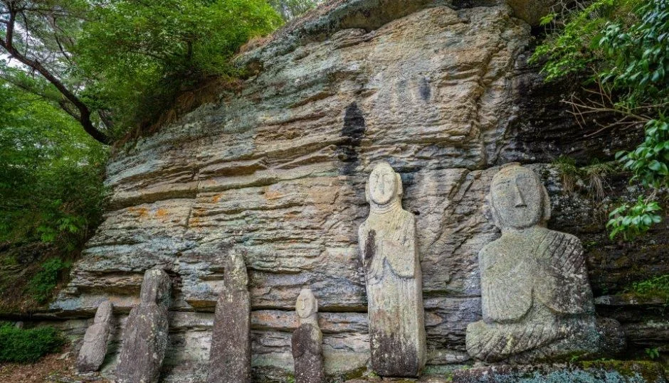
▲ 층이 진 응회암 암벽 아래의 석불들. 화순 운주사 층상응회암 사진으로 안내된 장면이며 촬영 시기는 자료에 없다. ⓒ 한국관광공사 · 공공누리 제1유형
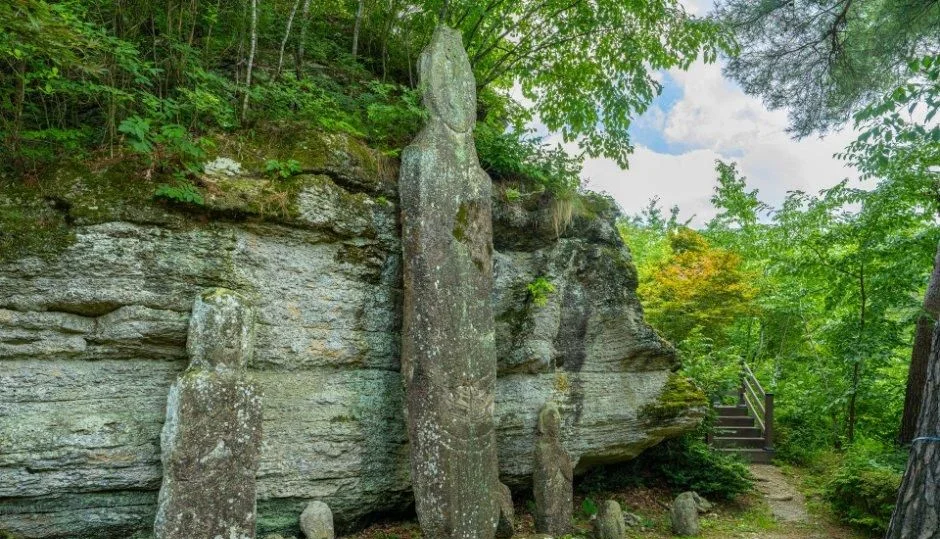
▲ 암벽 앞에 선 길쭉한 석불. 잎이 무성해 초록이 짙은 시기 사진이다. ⓒ 한국관광공사 · 공공누리 제1유형
3. 와불 — 운주사의 백미라 불리는 바위
화순군 안내는 와불을 '운주사의 백미'로 소개한다. 한국관광공사 정보는 와불이 골짜기 서쪽 언덕 위에서 땅에 누운 부부불의 형태라고 적고, 여행기사는 대웅전에서 오른쪽 산길로 올라가면 닿는다고 안내한다. 한국관광공사 운주사 여행기사 바로가기
크기와 성격에 관한 설명은 자료에 따라 다르다. 화순군 문화재 안내에 인용된 글에는 남편불 12m, 부인불 9m라는 서술이 있고, 학술 글은 13m가 넘는 암반에 부처를 새기다 떼어내는 공정을 마치지 못한 미완성 석불로 본다. 도선국사가 와불을 세우려 할 때 새벽닭이 울어 세우지 못했다는 전설도 전한다. 와불이 일어서면 새 세상이 온다는 이야기는 한국관광공사 여행기사에 소개돼 있다. 한국민족문화대백과사전은 와형 석조여래불이 길이 12m, 너비 10m의 바위에 조각됐다고 적는다.
▲ 운주사 와불로 안내되는 바위. 나뭇가지에 잎이 보이지 않는 사진으로, 촬영 시기는 자료에 없다. 앞쪽의 작은 돌은 떨어진 머리 부분이라는 안내가 있으나 사진만으로는 확인하지 못했다. ⓒ 한국관광공사 · 공공누리 제3유형(변경금지)
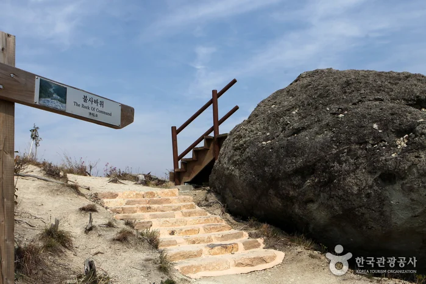
▲ 계단 옆 안내판에 “불사바위”로 표기된 큰 바위. 정확한 위치는 자료에 없다. ⓒ 한국관광공사 · 공공누리 제3유형(변경금지)
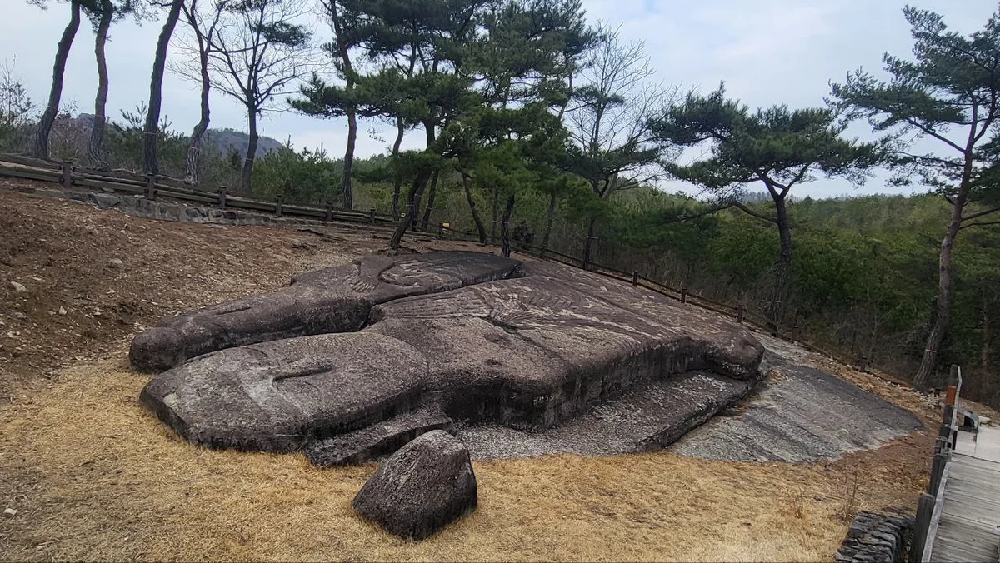
▲ 와불로 안내되는 바위 일대. 풀이 말라 갈색으로 보이는 사진으로, Commons 기록상 2025년 11월 26일 촬영이다. ⓒ 레이저마인드 · CC0 1.0 · Wikimedia Commons
4. 이용 정보 — 시간·요금·주차(2026-10-20 기준)
한국관광공사 정보는 운주사(도암면 천태로 91-44)의 이용시간을 하계 07:00~19:00, 동계 07:00~18:00로, 휴무는 연중무휴, 주차는 가능으로 안내한다. 하계와 동계를 나누는 날짜는 자료에 없어 방문 전 확인이 필요하다. 사찰 문의는 061-374-0660이다. 대한민국 구석구석 바로가기
| 항목 | 운주사(사찰) | 화순군립 운주사문화관 |
|---|---|---|
| 주소 | 도암면 천태로 91-44 | 도암면 천태로 91-20 |
| 이용시간 | 하계 07:00~19:00 / 동계 07:00~18:00(구분 날짜 미확인) | 3~10월 10:00~18:00 / 11~2월 10:00~17:00 |
| 휴무 | 연중무휴 | 매주 월요일, 1월 1일, 설·추석 연휴 |
| 요금 | 입장료 공식 확인 못함 | 무료 |
| 주차 | 가능(요금·주차면 수 확인 못함) | 주차 정보 없음 |
| 소요시간 | 공식 소요시간 확인 못함 | 약 1시간(한국관광공사 정보) |
| 문의 | 061-374-0660 | 061-379-5893 |
화순군 문화재 담당(문화예술과 061-379-3225, 문화재팀 061-379-3178)도 문의처로 안내된다. 사찰 입장료와 주차료는 화순군 안내 페이지에서 확인되지 않았으므로 현장 안내를 따르는 편이 안전하다. 템플스테이는 한국관광공사 정보에 휴식형 '천불천탑 / 미완의 꿈' 프로그램, 성인 60,000원, 중고생·초등생 50,000원으로 적혀 있지만 운영 여부는 사찰에 확인해야 한다.
▲ 화순군립 운주사문화관 외관. 도암면 천태로 91-20에 있다. ⓒ 한국관광공사 · 공공누리 제1유형
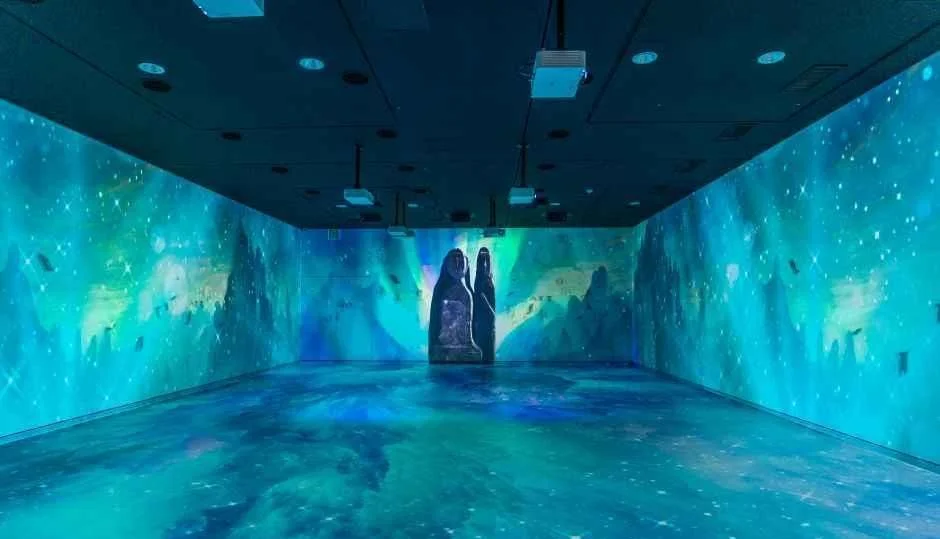
▲ 운주사문화관 내부 사진으로 안내된 영상 전시 공간. 상영 내용은 시기에 따라 다를 수 있다. ⓒ 한국관광공사 · 공공누리 제1유형
5. 코스 — 둘러보는 순서
공식 소요시간은 확인하지 못했다. 한국관광공사 여행기사가 소개한 순서를 기준으로 정리하면 입구에서 와불까지 한 방향으로 걷게 된다. 이 기사는 2016년 9월에 갱신된 것이어서 시설 배치는 현장 안내판을 우선하자.
| 순서 | 볼 곳 | 참고 |
|---|---|---|
| 1 | 일주문, 층석탑 일대 | 입구에서 탑을 사선으로 보는 구도가 소개됨 |
| 2 | 천왕문 앞 석조불감과 원형다층석탑 | 보물 지정 문화재 |
| 3 | 대웅전, 오른쪽 산길의 와불 | 산길 오르막이 있어 신발 확인 |
| 4 | 칠성바위 | 북두칠성을 닮은 타원형 돌 7개로 소개 |
| 5 | 공사바위 | 탑과 계곡을 내려다볼 수 있다고 소개 |
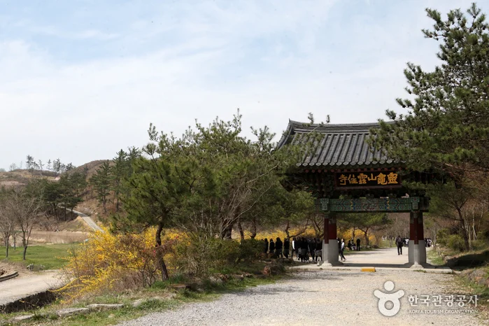
▲ 입구로 이어지는 길과 일주문 방향. 개나리가 피어 있어 봄 사진으로 보이며, 늦가을 모습과는 다르다. ⓒ 한국관광공사 · 공공누리 제3유형(변경금지)
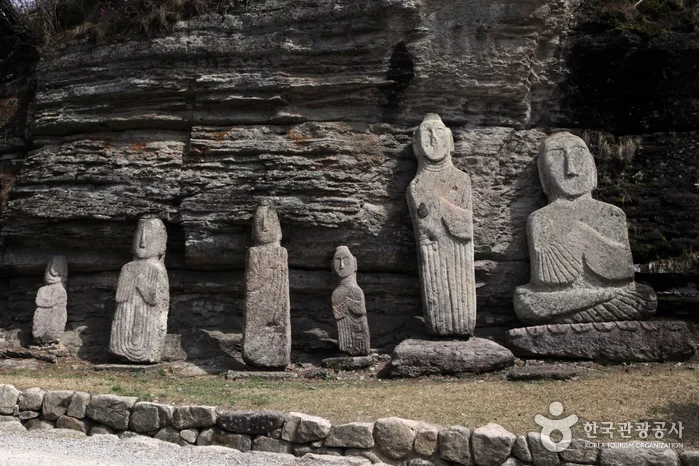
▲ 암벽 아래 늘어선 석불. 촬영 시기는 자료에 없다. ⓒ 한국관광공사 · 공공누리 제3유형(변경금지)
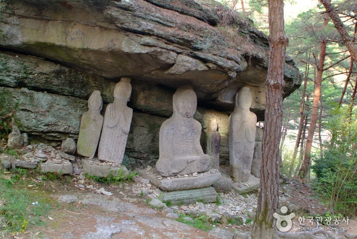
▲ 바위가 지붕처럼 덮인 곳에 모인 석불. 촬영 시기는 자료에 없다. ⓒ 한국관광공사 · 공공누리 제3유형(변경금지)
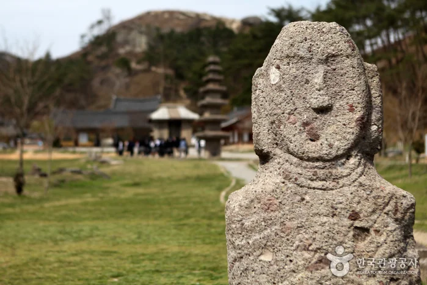
▲ 투박한 얼굴의 석불과 멀리 보이는 탑. 촬영 시기는 자료에 없다. ⓒ 한국관광공사 · 공공누리 제3유형(변경금지)
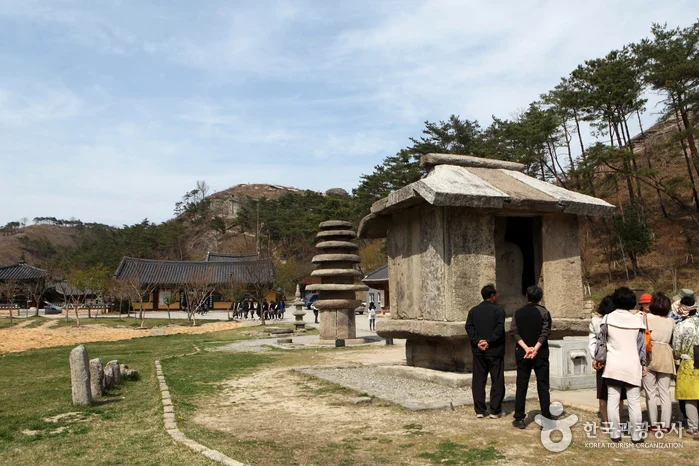
▲ 지붕을 얹은 석조 구조물 앞에 관람객이 선 모습. 석조불감으로 보이나 사진 설명에 지점명은 없다. ⓒ 한국관광공사 · 공공누리 제3유형(변경금지)
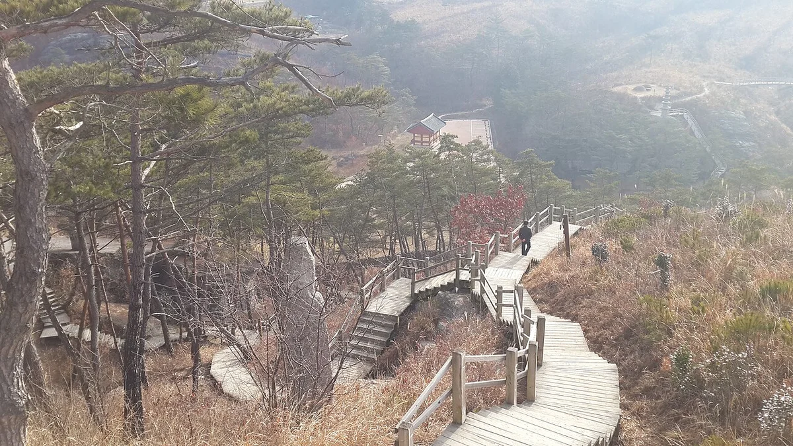
▲ 나무 데크 계단이 이어지는 산자락 길. 잎이 진 풀과 뿌연 대기가 보이는 사진으로, Commons 기록상 2015년 1월 24일 촬영이며 지점명은 자료에 없다. ⓒ Mar del Este · CC BY-SA 4.0 · Wikimedia Commons
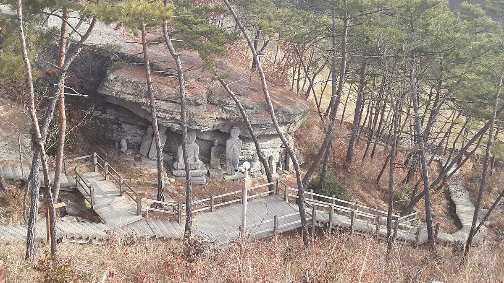
▲ 바위 아래 석불이 모인 곳으로 내려가는 나무 계단. 숲에 잎이 거의 보이지 않으며 Commons 기록상 2015년 1월 24일 촬영이다. ⓒ Mar del Este · CC BY-SA 4.0 · Wikimedia Commons
6. 늦가을 방문 체크 — 시간·산길·건조기
가을이 깊어지면 가장 먼저 부딪히는 것은 시간이다. 사찰은 동계에 18:00까지이고 문화관은 11월 1일부터 17:00에 닫는다. 하계·동계 전환일이 자료에 없으므로 10월 말~11월 방문이면 전화로 확인하고, 와불 산길을 오르려면 마감 전 여유를 잡자. 일몰 시각은 한국천문연구원 출몰시각에서 화순 또는 광주 값을 조회하자.
| 상황 | 할 일 | 근거 |
|---|---|---|
| 시간 | 동계 폐장 18:00, 문화관 11월부터 17:00, 월요일 문화관 휴무 | 한국관광공사 정보 |
| 와불 산길 | 대웅전에서 오른쪽 산길로 올라가는 구간이 있어 미끄럽지 않은 신발 착용 | 한국관광공사 여행기사 |
| 건조기 산불 | 2008년 4월 운주사 인근 산불에서 숲 가꾸기 덕에 경내 문화재는 보존. 흡연·화기 금지는 일반 수칙 | 국가유산청 월간 기사 |
| 낙엽·안개 | 안내판·계단 가장자리 확인, 일반 안전 수칙 | 일반 안전 수칙 |
| 사진 시기 | 이 글의 한국관광공사 사진 다수는 푸른 계절이나 봄이라 늦가을 모습과 다를 수 있음(가을·겨울 사진은 Commons 보강) | 본문 캡션 |
운주사의 석불은 응회암이라 표면이 약하다고 한국관광공사가 설명한다. 만지거나 올라서지 말고 안내선을 지키자.
아래 사진 셋은 Wikimedia Commons에 올라온 가을 사진이다. 단풍 사진은 Commons 기록상 2007년 10월 30일에 촬영돼 오래된 것이어서 현재의 배치·나무 상태와 다를 수 있고, 단풍 시기도 해마다 다르니 참고용으로만 보자.
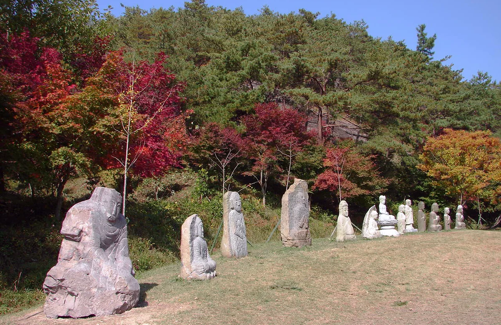
▲ 붉게 물든 나뭇잎 아래 석불이 줄지어 선 길. Commons 기록상 2007년 10월 30일 촬영. ⓒ Steve46814 · CC BY-SA 3.0 · Wikimedia Commons
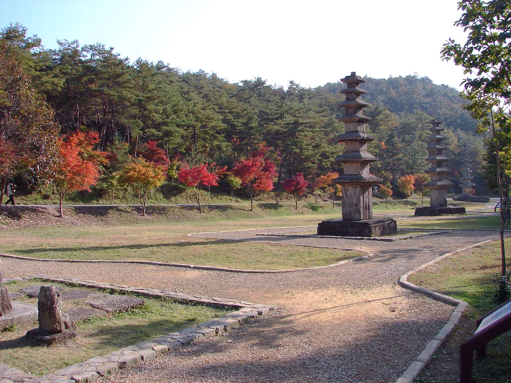
▲ 단풍이 든 숲 앞 터에 서 있는 석탑. Commons 기록상 2007년 10월 30일 촬영. ⓒ Steve46814 · CC BY-SA 3.0 · Wikimedia Commons
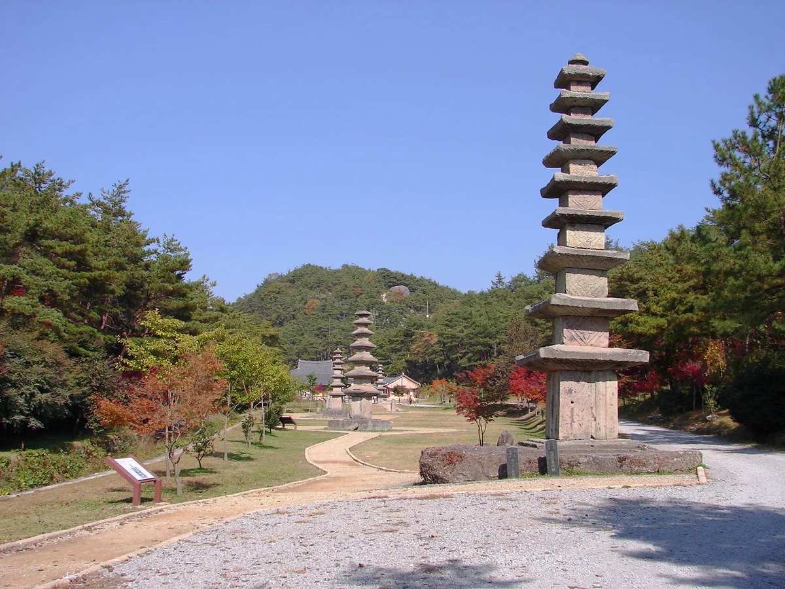
▲ 붉은 잎이 보이는 나무 곁의 다층석탑. Commons 기록상 2007년 10월 30일 촬영. ⓒ Steve46814 · CC BY-SA 3.0 · Wikimedia Commons
7. 가는 길과 이어 가기
화순군 안내에 따르면 광주효덕교차로에서 약 39분(26km), 나주남평오거리에서 약 33분(19km), 호남고속도로 주암IC에서 약 70분(59km)이 걸린다. 도암면 소재지 삼거리 방면으로 가서 천불천탑사진문화관 앞에서 우회전하는 것이 공통 경로로 소개된다. 실시간 소요 시간은 지도 앱으로 확인하자.
같은 화순에서 이어 갈 곳과 요금·휴무는 화순 고인돌 가을꽃 축제 기사의 연계 코스 표에 정리돼 있어 이 글에서는 중복하지 않는다. 광주 쪽 가을 산행은 무등산 서석대 가을 기사, 단풍 시기는 2026 단풍 절정 시기 기사를 참고하자. 다른 지역 유산 걷기는 김해 가야 유산 걷기 기사가 있다.
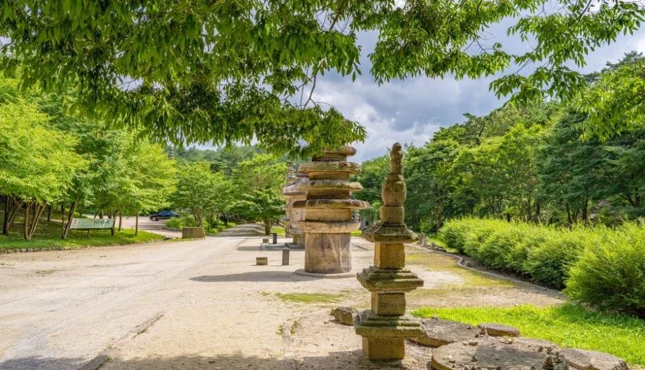
▲ 길가의 석탑. 잎이 무성한 초록 시기 사진이며 지점명은 자료에 없다. ⓒ 한국관광공사 · 공공누리 제1유형
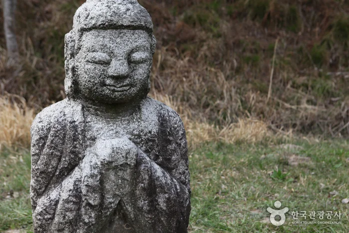
▲ 합장한 모습의 석불. 촬영 시기는 자료에 없다. ⓒ 한국관광공사 · 공공누리 제3유형(변경금지)
✅ 출발 전 체크
1) 사찰 하계 07:00~19:00·동계 07:00~18:00, 전환일은 전화(061-374-0660)로 확인 2) 문화관은 11월부터 17:00 마감, 월요일 휴무(061-379-5893) 3) 사찰 입장료·주차료는 공식 확인 못함 4) 석불·석탑 수와 국가유산청 기사의 '7층석탑' 표기는 자료마다 달라 국가유산포털에서 지정 현황 확인 5) 이 글의 한국관광공사 사진은 늦가을이 아닌 계절이 많고, 가을·겨울 사진은 Commons 자료(2007·2015·2025년 촬영)
8. 정리
운주사에 남은 석불·석탑은 천 개가 아니며, 석탑 12~22기·석불 70~101구로 자료마다 다르다. 한국관광공사 정보 기준 사찰은 동계 07:00~18:00, 문화관은 11월부터 10:00~17:00이므로 늦가을에는 시간부터 확인해야 한다. 와불은 대웅전 오른쪽 산길 위에 있다.
사찰 입장료·주차료, 하계·동계 전환일, 공식 소요시간은 확인하지 못했다(사적은 제312호). 이 기사는 2026년 10월 20일 기준이므로 방문 전 사찰(061-374-0660)과 화순군(061-379-3225)에 확인하자.
참고: 화순군 운주사 안내 · 국가유산청 월간 기사